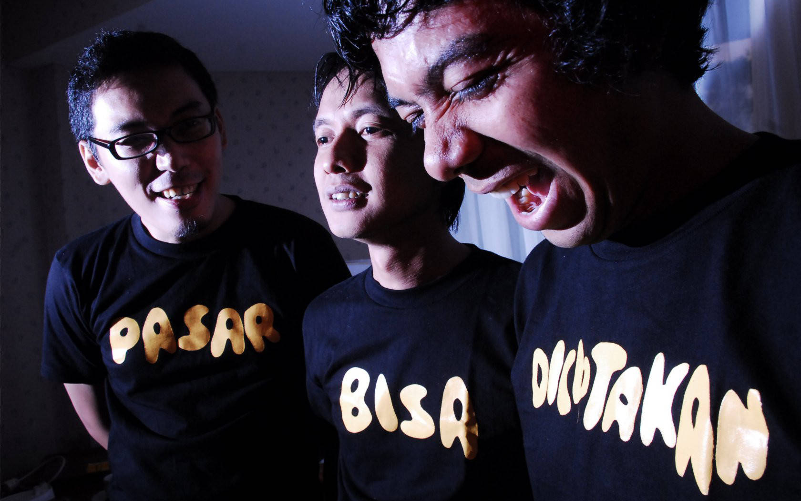

Efek Rumah Kaca atau sering disebut ERK adalah sebuah band yang beranggotakan Cholil Mahmud (vokal, gitar), Adrian Yunan Faisal (bass, backing vokal)
dan Akbar Bagus Sudibyo (drum, backing vokal). Perjalanan mereka dimulai sejak tahun 2001, dulu mereka sempat menggunakan nama “Hush” (masih 5 personil),
“Super Ego”, kemudian akhirnya berubah nama menjadi “Efek Rumah Kaca” hingga sekarang. Nama ini diambil berdasarkan salah satu lagu mereka yang ditulis pada
tahun 2003.

Sejak awal berdirinya hingga sekarang band ini telah membuat tiga album. Album yang pertama berjudul “Efek Rumah Kaca”
dirilis pada tahun 2007 kemudian disusul album ke dua “Kamar Gelap” pada tahun 2008. Kemudian ada lagi satu album yang berisi lagu-lagu Efek Rumah Kaca yang
berisi remix lagu-lagu yang pernah dibuatnya dengan judul album “ERK RMX”. Dan yang terakhir yaitu "Sinestesia".
" Akhirnya aku usai juga "
Efek Rumah Kaca - Putih
Trio pop minimalis ini memberi kritik-kritik tentang kehidupan sosial kehidupan
manusia yang tertulis dalam beberapa lirik-lirik lagunya. Seperti dalam album pertama mereka yang bernama “Efek Rumah Kaca” lagu-lagu seperti Jatuh Cinta Biasa Saja,
Belanja Terus Sampai Mati dan Cinta Melulu merupakan contoh lirik yang berisi pandangan atau kritik tentang bagimana kehidupan manusia jaman sekarang.
Lebih detailnya lagi lagu berjudul “Efek Rumah Kaca” bercerita tentang bagaimana perlakuan manusia terhadap bumi yang menyebabkan kerugian untuk manusia sendiri,
“Jatuh Cinta Biasa Saja” berisi tentang kritik bagaimana orang sekarang yang ketika merasa jatuh cinta harus selalu mengirim kabar tiap jamnya,
harus selalu berpelukan dan mengekspresikannya secara berlebihan. Dan “Cinta Melulu” yang memberi kritik satir terhadap permusikan Indonesia yang top hits nya
selalu diisi dengan lagu-lagu cinta melayu selalu itu-itu saja. Ada juga lagu yang sedikit menggelitik tetapi memang terjadi di masyarakat berjudul
“Kenakalan Remaja di Era Informatika” , lagu yang cukup booming di tahun 2008 ini bercerita tentang kenakalan remaja era sekarang yang bukan cuman tawuran saja.
Dan juga masih banyak lagi lagu-lagu band indie asal Jakarta ini yang menarik untuk di simak.
Ada beberapa lagu juga dari ERK yang menyinggung masalah politik seperti “Mosi Tidak Percaya” yang ditujukan kepada pemerintah yang telah diberi
kepercayaan kepada masyarakat. Pada tahun 2009 Efek Rumah Kaca juga sempat dipercaya oleh surak kabar Kompas untuk mengisi rubrik seputar pemilu yang ada
khusus pada hari Sabtu.

Song by : Efek Rumah Kaca - Sebelah Mata